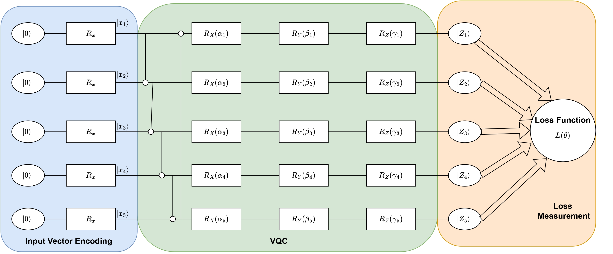

Quantum Machine LearningWe explore the integration of variational quantum circuits (VQCs) and Condition Value at Risk (CVaR) to optimize the kinematics and network connectivity of autonomous vehicles (AVs) under stochastic conditions, such as wireless channels and traffic dynamics. Our study employs VQC-based multi-objective reinforcement learning (MORL) to simultaneously manage:
To achieve these goals, we formulate the problem as a multi-objective Markov decision process (MOMDP) and transform it into quantum eigen-states and eigen-actions using quantum circuits. This approach aims to maximize handoff-aware data rates, enhance traffic flow, and ensure collision avoidance.  Related publications
|